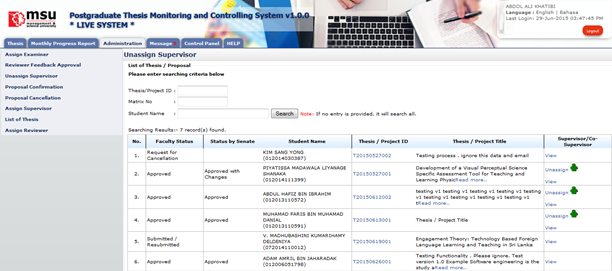
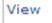

Figure 13: Assign Reviewer – List of Student
Pre-condition
- Faculty/Senate already assigned supervisor/co-supervisor
- The thesis/proposal at least have 1 supervisor/co-supervisor assigned
Post-condition
- Can unassign other supervisor/co-supervisor
- Can change other supervisor/co-supervisor
- Can assign supervisor/co-supervisor
Steps:-
- Click on the Administration tab on the system Top panel section.
- The Administration menu will be displayed on the system Left panel and click on it.
- Click the Unassign Supervisor and the searching page will be displayed which the user can search for a particular thesis to unassign it supervisor/co-supervisor. Otherwise, the result will show the entire listed thesis.
- Enter the Thesis’s ID or Matrix No into the field and click on Search button.
- The record will be displayed under the search result.
- Or it can be search via Student Name by enter the student name and click Search by Student Name Only.
- The record will be displayed under the search result
- Otherwise the result will display all listed result.
- To unassign supervisor/co-supervisor Click at Supervisor/Co-Supervisor column.
- To view the assigned supervisor/co-supervisor, click.
Created with the Personal Edition of HelpNDoc: iPhone web sites made easy